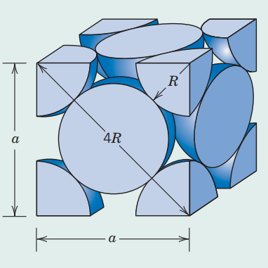

Applying the concept of String, List and Loops, and Comparison and Flow Control for Chemistry exercises
Pyhton 3
code
Jupyter Notebook
Chemistry
Physics
Author
Dinda Gusti Ayu
Published
January 19, 2025
Strings, List and Loops, and Comparison and Flow Contol
This work aims to practice physics exercises using strings, list and loops, comparison dan flow control to solve the problem in Python. There are some solutions for tasks in this Python code.
Key Equation
Density Computations
\(\rho=\frac{m}{v}=\frac{nA}{V_{C}N_{A}}\)
Avogadro’s number
6.022 x \(10^{23}\), 1 amu/atom (or molecule) = 1 g/mol
1. Strings
P3.1
Produce a nicely formatted list of the values of the physical constants, h, c, \(k_{B}\), R, and \(N_{A}\), to four significant figures, with their units.
h = 6.626e-34 J.s c = 2.998e+08 m.s-1 kB = 1.381e-23 J.K-1 R = 8.314e+00 J.K.mol-1 N_A = 6.022e+23 mol-1
h = 6.626e-34J.s
c = 2.998e+08m.s-1
kB = 1.381e-23J.K-1
R = 8.314e+00J.K.mol-1
N_A = 6.022e+23mol-1
P3.2
The following variables define some thermodynamic properties of \(CO_{2}\) and \(H_{2}O\).
# Triple point of CO2 (K, Pa)T3_CO2, p3_CO2 =216.58, 5.185e5# Entalphy of fusion of CO2 (kJ.mol-1).DfusH_CO2 =9.019# Entrophy of fusion os CO2 (J.K-1.mol-1).DfusS_CO2 =40# Entalphy of vaporization of CO2 (kJ.mol-1).DvapH_CO2 =15.326# Entrophy of vaporization of CO2 (J.K-1.mol-1).DvapS_CO2 =70.8# Triple point of H2O (K, Pa)T3_H2O, p3_H2O =273.16, 611.73# Entalphy of fusion of H2O (kJ.mol-1).DfusH_H2O =6.01# Entrophy of fusion of H2O (J.K-1.mol-1).DfusS_H2O =22.0# Entalphy of vaporization of H2O (kJ.mol-1).DvapH_H2O =40.68# Entrophy of vaporization of H2O (J.K-1.mol-1).DvapS_H2O =118.89print(' '*22+'CO2'+' '*9+'H20')print('_'*40)print('p3 /pa ', f'{p3_CO2:5.0f}{p3_H2O:5.2f}')print('T3 /K ', f'{T3_CO2:5.2f}{T3_H2O:5.2f}')print('DfusH /kJ.mol-1 ', f'{DfusH_CO2:5.3f}{DfusH_H2O:5.3f}')print('DfusS /J.K-1.mol-1', f'{DfusS_CO2:4.1f}{DfusS_H2O:6.1f}')print('DvapH /kJ.mol-1 ', f'{DvapH_CO2:5.3f}{DvapH_H2O:8.3f}')print('DvapS /j.k-1.mol-1', f'{DvapS_CO2:5.1f}{DvapS_H2O:5.1f}')
Nuclear binding energy and the mass defect. A neutron has a slightly larger mass than the proton. These are often given in terms of an atomic mass unit, where one atomic mass unit (u) is defined as 1/12th the mass of a carbon-12 atom.
Straight-chain alkanes are hydrocarbons with the general stoichiometric formula \(C_{n}H_{2n+2}\), in which the carbon atoms form a simple shain: for example, butane, \(C_{4}H_{10}\) has the structural formula that may be depicted \(H_{3}CC_{2}CH_{2}CH_{3}\). Write a progra, to output the structural formula of such an alkane, given its stoichiometry (assume \(n\geq1\)).
# Assume n = 5stoich ='C5H12'fragments = stoich.split('H')nC =int(fragments[0][1:])nH =int(fragments[1])if nH !=2*nC +2:print('{} is not alkane!'.format(atoich))else:print('H\u2083C', end='')for i inrange(nC-2):print('-CH\u2082', end='')print('-CH\u2083')
H₃C-CH₂-CH₂-CH₂-CH₃
P3.5
Produce a table if the FCC element symbols abd their corresponding atomic radius (nm) and atomic weight (g/mol).
Alumunium, copper and lead has an atomic radius of 121, 132, and 146 nm, respectively, an FCC crystal structure, and atomic weight of 26.98, 63.55, and 207.20 g/mol. Compute their theoritical density,and compare the answer with their measured density.
Face centered cubic (fcc) structure

image.png
Credit: Callister & Rethwisch
in the FCC unit cell illustrated, the atoms touch one another across a face-diagonal, the length of which is 4R. Because the unit cell is a cube, its volume is \(a^{3}\), where a is the cell edge length. From the right triangle on the face.
\(a^{2} + a^{2} = (4R)^{2}\)
Solving for a,
\(a=2R\sqrt{2}\)
The FCC unit cell volume \(V_{C}\) may be computed from
\(V_{C}=a^{3}=(2\sqrt{2})^{3}=16R^{3}\sqrt{2}\)
import numpy as np# Avogadro's number , in atoms/mol.NA =6.022*10**23# The number of atoms per unit cell in FCCn =4# The atomic weight, and Radii of atoms (use floats/ints instead of strings)Atomics = ['Al', 'Cu', 'Pb'] # use string ' 'A_weight = [26.98, 63.55, 207.20] # atomic weights in g/mol use floatRadii = [143*10**-10, 128*10**-10, 180*10**-10] # radii in cm (converted from pm) use float/integers# Computational densityfor atom, weight, radius inzip(Atomics, A_weight, Radii): V_cell =16* (radius**3) * np.sqrt(2) m_cell =4* weight rho = m_cell / (V_cell *NA)print(f" {atom}: V_cell={V_cell:.3e} cm^3, m_cell={m_cell:.3e} g, rho={rho:.3f} g/cm^3")
Determine whether each of the following electron configuration is an inert gas,a halogen, an alkali metal, an alkaline earth metal, or transition metal. Justify your choices.